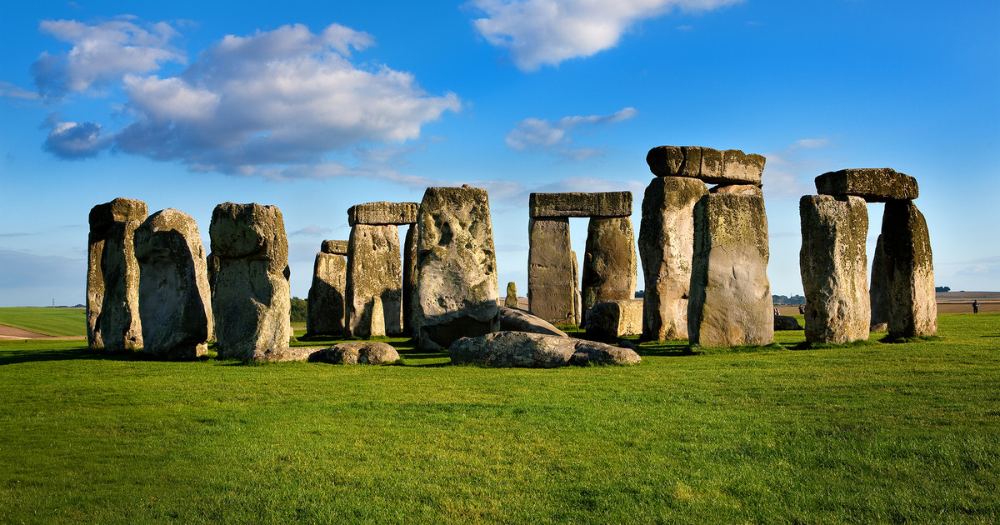

The Real-Time Dynamic Physics-Based Particle Simulation and Interaction System milestone page aims to show our progress to date. The original proposal states that we plan to build an interactive WebGL framework where users can smash objects of their choice into each other, causing tiny sand-like debris particles to disperse around the scene.
Our aspired functionalities include:
We achieve these effects by leveraging existing JavaScript libraries for WebGL such as three.js. We incorporated and built upon existing open-source graphics work as well.
Let's review how much of our primary goal we've accomplished!
Currently, we have a dynamic scene in which the user can shoot balls in a chosen direction via mouse click. This scene uses a modified version of an example system using Ammo, a JavaScript physics library converted from C.
Of course, the tentative plan in the proposal should be updated to reflect our progress thus far. The framework we implemented has many features, but there are yet more features and revisions in the works.
So far, we have mainly be working on the backend functionalities that are needed to achieve various effects and simulations we intended, and made satisfiable progress.
However, our scene still looks like similar to the setup of the three.js example that we based on project on in terms of the scene layout. Therefore, we plan to work on the front end more and completely change our scene to be more meaningful and visually pleasing.
Specifically, we plan to setup our animations to be a mini simulated Stonehenge, with many carefully chosen, cool mesh objects integrated to provide a ritualized atmosphere.
In terms of functionalities, we plan to continue adding features such as wind-particle effects, flood simulations, and cloth animation. We also may add options so that users can drag scene primitives around, instead of shooting balls to smash them.
We will also work to make mesh-breaking more believable (i.e. more accurate shattering/particle effects), polish visuals and textures to maximize aesthetic beauty, and prepare for the final presentation by working on the final video, presentation, webpage, etc.
This video demonstrates what we've done so far with demos of our project.
These slides are used to complement the milestone video. They also contain the narrative blueprints for next week's plan.
The libraries we've taken advantage of most thus far include three.js, node.js, and ammo.js, among others. The collision shattering effects is built upon on the the convex object breaker by three.js.
Below are some links to resources that have helped us pick up three.js and/or inspired our current features: